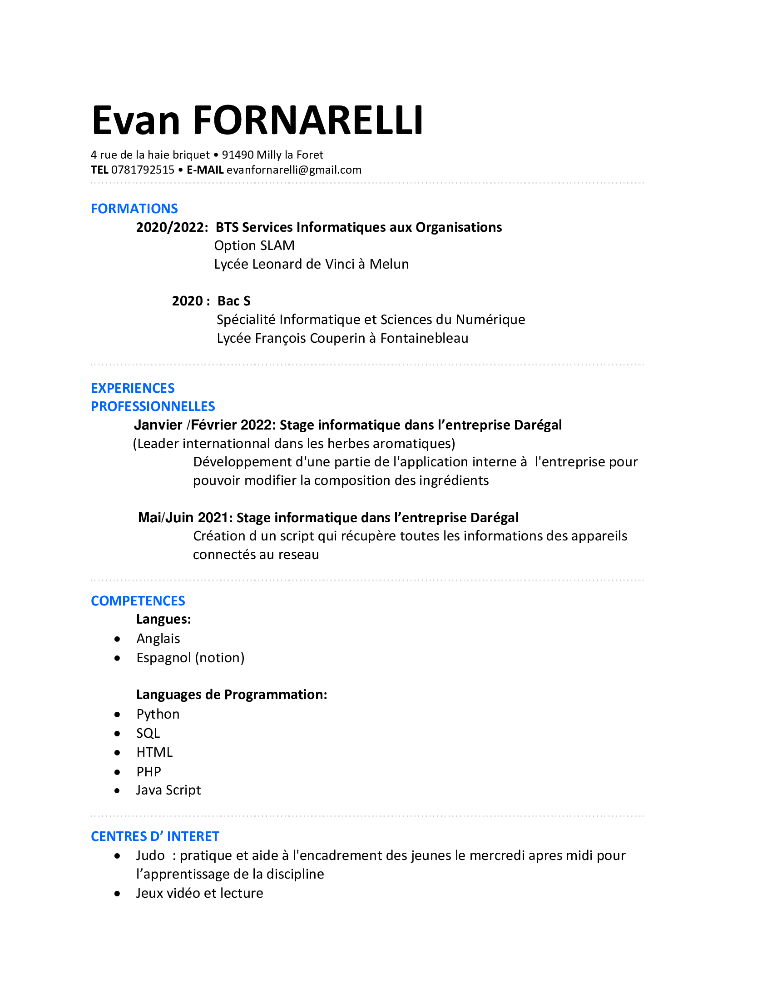

Porte follio Evan Fornarelli
Bienvenu, ce porte follio a pour but de parler de mon experience acquise au cours de mon bts , comme mes projets ou mes stages
CV
Projets
Voici mes projets personels réalisé au cours de mon bts.


Mon Bts
Ce qui ma poussé a faire mon bts + parcoiur informatique.
Veille Technologique
A venir bientot
Mon stage de 1er année
Mon stage s'est déroulé du 25 Mai au 2 Juin 2021 dans l'entreprise Daregal leadeur mondial sur le marché des herbes aromatique
Mon projet
Pendant mon premier stage , j'ai réalisé un script en PHP permettant de récupérer les données des appareils de l'entreprise comme le nom de l'appareil ou leurs modèles
Par exemple ici un extrait de code qui récupere le disque de stockage.
Le script récupère les informations des appareils a l'aide de requête SQL. Puis les insert dans une application interne a l'entreprise permettant de gérer le parc informatique.

Je ne peux hélas pas montré le resultat car certaine données sensible apparaissent sur l'écrans
Mon stage de 2em année
a venir...